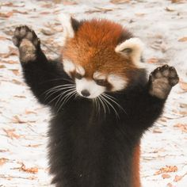
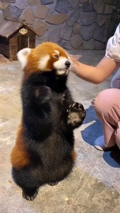
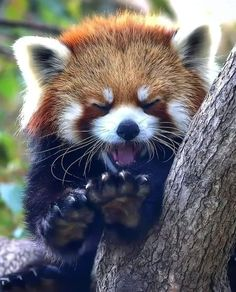

Os pandas vermelhos são seres solitários, com pelagem predominantemente vermelha no corpo e as suas vidas se baseiam em comer bambu e dormir em cima de árvores



Algumas características deles são:
Eles se assemelham às raposas, mas tem uma fisionomia mais fofucha;
Os pandas-veremlhos são encontrados em países como China, Nepal e Nianmar;
Comem muito bambu;
São sereszinhos tímidos, tanto é que preferem fugir de uma competição e coisas do tipo;